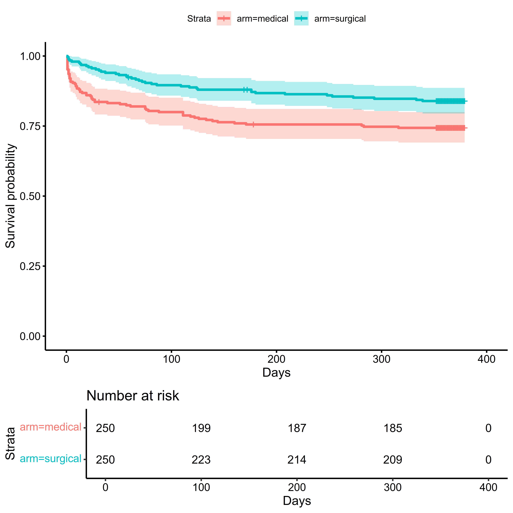

Chapter 4 Using R
The R environment for Statistical Computing is a free, open source environment for managing and visualizing data and performing analyses. Its capabilities can be augmented by downloading software packages from repositories, such as the Comprehensive R Archival Network (CRAN), and more recently, GitHub. Rstudio is a powerful development environment that makes it easier to use R, expands its functionality, and allows the integration of other tools, such as Git, into an analyst’s workflow. If you are new to R or would like additional resources on using R in practice, see the appendix.
In addition to R and Rstudio, we will also need to install RTools, also known as the R toolchain. These are software tools for compiling software packages. Some of the packages we use may have to be compiled after being downloaded, and RTools provides all the software needed to do so. CRAN provides instruction on which version of RTools you should use, depending on your version of R, and how to install it.
This section is primarily about how to use R and associated software packages. While this does include demonstration of how to implement statistical models and hypothesis tests, a larger discussion of their appropriate use and interpretation will take place in later sections.
4.1 Installing Packages
Once we have Rtools installed, we are ready to install the required packages from CRAN and Github. The install.packages() function in R can be used to install packages from CRAN, R-Forge, BioC, and other repositories via the command line. In Rstudio, users can also use the ‘Packages’ tab to see which packages are installed, their current version, and whether or not they have been loaded into the workspace for use. If you have installed the devtools package, devtools::install_github() can be used to install packages from Github or other version control repositories.
If you would like to explore which R packages are available for a given application or research area, the CRAN Task Views, including the CRAN Clinical Trials taskview, are worth exploring.
4.1.1 Packages from CRAN
Below are some of the packages that we will use from CRAN, along with a brief description of their purposes:
- devtools - A suite of tools for R package development
- cobalt - Creating tables and plots for assessing covariate balance
- knitr - Tools for literate programming: including code in reproducible reports
- margins - Calculating marginal or partial effects from regression models
- mgcv - Fitting generalized additive models
- sandwich Robust covariance matrix estimation
- speff2trial Semiparametric estimation of the marginal hazard ratio using inverse probability weighting
- survminer - Creating plots of time-to-event data
- survRM2 - Calculating the restricted mean survival time (RMST) with and without covariate adjustment.
- table1 - Creating simple tabulations in aggregate and by treatment arm
- tidyverse - An ecosystem of packages for working with data
required_packages <-
c("devtools",
"cobalt",
"knitr",
"margins",
"mgcv",
"sandwich",
"speff2trial"
"survminer",
"survRM2",
"table1",
"tidyverse"
)
packages_to_install <-
setdiff(
x = required_packages,
y = installed.packages(.Library)[, "Package"]
)
install.packages(packages_to_install)4.1.3 Loading Packages into Workspace
Once a package has been successfully installed, we use the library() command to load it into the workspace for use:
It is possible that different packages contain a function of the same name. For example, the table1 package contains the function table1(): there are other packages that also have a function named table1(), such as the furniture package. If both of these packages are loaded, it can cause confusion about which version should be used when table1() is called. R will warn when such conflicts can arise, but as a best practice, it is useful to specify the package and function as as follows: table1::table1(). This makes code easier to use and potentially reduces ambiguity.
4.2 Loading the Data: MISTIE-III
The data dictionary and more information about the MISTIE III study were presented earlier (Hanley et al. 2019). All of the data needed for the examples are available on the web. To load these, we create a file connection to the URL using the url() function, and then use read.csv() to read in the comma separated values (CSV) file. To load data from a local file path, the file.path() function is useful for creating file paths. We can start by loading the simulated MISTIE III data. Once we have loaded the full data, we can use dplyr::slice to take the first 500 rows.
data_url <-
paste0("https://github.com/jbetz-jhu/CovariateAdjustmentTutorial",
"/raw/main/Simulated_MISTIE_III_v1.2.csv")
sim_miii_full <- read.csv(file = url(data_url))
# Read in data: Recast categorical variables as factors
sim_miii_full <-
sim_miii_full %>%
dplyr::tibble() %>%
dplyr::mutate(
# Convert variables from binary indicators to labeled categorical variables
male =
factor(
x = male,
levels = 0:1,
labels = c("0. Female", "1. Male")
),
across(
.cols =
all_of(
x = c("hx_cvd", "hx_hyperlipidemia",
"on_anticoagulants", "on_antiplatelets")
),
.fns = function(x) factor(x, levels = 0:1, labels = c("0. No", "1. Yes"))
),
# Convert GCS and MRS variables from character data to categorical variables
across(
.cols = starts_with("gcs") | starts_with("mrs"),
.fns = factor
),
ich_location =
factor(
x = ich_location,
levels = c("Deep", "Lobar")
),
arm =
factor(
x = arm,
levels = c("medical", "surgical")
),
tx = 1*(arm == "surgical")
)
# Take the first 500 rows
sim_miii <-
sim_miii_full %>%
dplyr::slice(1:500)Other useful functions include:
head()/tail()- Looking at the first \(n\) rows of a datasetnrow()/ncol()- Counting the rows/columns of a datasetcolnames()/rownames()- Getting the row/column names of a dataset
## # A tibble: 6 × 22
## sim_participant_id age male hx_cvd hx_hyperlipidemia on_anticoagulants
## <int> <int> <fct> <fct> <fct> <fct>
## 1 1 52 1. Male 0. No 0. No 0. No
## 2 2 74 0. Female 0. No 1. Yes 1. Yes
## 3 3 62 1. Male 0. No 1. Yes 0. No
## 4 4 81 0. Female 0. No 0. No 0. No
## 5 5 73 0. Female 0. No 1. Yes 0. No
## 6 6 60 1. Male 1. Yes 1. Yes 0. No
## # ℹ 16 more variables: on_antiplatelets <fct>, ich_location <fct>,
## # ich_s_volume <dbl>, ivh_s_volume <int>, gcs_category <fct>, arm <fct>,
## # ich_eot_volume <dbl>, mrs_30d <fct>, mrs_30d_complete <fct>,
## # mrs_180d <fct>, mrs_180d_complete <fct>, mrs_365d <fct>,
## # mrs_365d_complete <fct>, days_on_study <int>, died_on_study <int>, tx <dbl>## [1] 500## [1] 22## [1] "sim_participant_id" "age" "male"
## [4] "hx_cvd" "hx_hyperlipidemia" "on_anticoagulants"
## [7] "on_antiplatelets" "ich_location" "ich_s_volume"
## [10] "ivh_s_volume" "gcs_category" "arm"
## [13] "ich_eot_volume" "mrs_30d" "mrs_30d_complete"
## [16] "mrs_180d" "mrs_180d_complete" "mrs_365d"
## [19] "mrs_365d_complete" "days_on_study" "died_on_study"
## [22] "tx"4.3 Assessing Baseline Balance
While randomization will tend to produce treatment groups that are similar on both measured and unmeasured factors, there will always be some degree of imbalance between groups in some characteristics. It is important to remember that these differences only represent confounding if groups are imbalanced on variables that are associated with the outcome. To assess the degree of imbalance, we can tabulate characteristics by treatment arm, and compute standardized differences to get a scale-free measure of the magnitude of imbalance.
table1(
~ age + male +
on_antiplatelets + ich_location + ich_s_volume + ivh_s_volume +
gcs_category | arm,
data = sim_miii
)| medical (N=250) |
surgical (N=250) |
Overall (N=500) |
|
|---|---|---|---|
| age | |||
| Mean (SD) | 60.6 (12.9) | 60.1 (12.5) | 60.3 (12.7) |
| Median [Min, Max] | 62.0 [28.0, 85.0] | 61.0 [35.0, 88.0] | 62.0 [28.0, 88.0] |
| male | |||
| 0. Female | 100 (40.0%) | 94 (37.6%) | 194 (38.8%) |
| 1. Male | 150 (60.0%) | 156 (62.4%) | 306 (61.2%) |
| on_antiplatelets | |||
| 0. No | 179 (71.6%) | 164 (65.6%) | 343 (68.6%) |
| 1. Yes | 71 (28.4%) | 86 (34.4%) | 157 (31.4%) |
| ich_location | |||
| Deep | 155 (62.0%) | 159 (63.6%) | 314 (62.8%) |
| Lobar | 95 (38.0%) | 91 (36.4%) | 186 (37.2%) |
| ich_s_volume | |||
| Mean (SD) | 47.9 (17.3) | 47.4 (16.2) | 47.7 (16.7) |
| Median [Min, Max] | 45.9 [15.2, 112] | 47.0 [12.9, 106] | 46.3 [12.9, 112] |
| ivh_s_volume | |||
| Mean (SD) | 2.46 (3.96) | 2.09 (3.40) | 2.28 (3.69) |
| Median [Min, Max] | 0 [0, 32.0] | 0 [0, 18.0] | 0 [0, 32.0] |
| gcs_category | |||
| 1. Severe (3-8) | 71 (28.4%) | 63 (25.2%) | 134 (26.8%) |
| 2. Moderate (9-12) | 111 (44.4%) | 102 (40.8%) | 213 (42.6%) |
| 3. Mild (13-15) | 68 (27.2%) | 85 (34.0%) | 153 (30.6%) |
This allows us to compare the means, medians, frequencies, and ranges of variables between groups.
library(cobalt)
cobalt::bal.tab(
x =
# Only tabulate baseline variables
sim_miii %>%
dplyr::select(
dplyr::all_of(
x = c("age", "male", "on_antiplatelets",
"ich_location", "ich_s_volume", "ivh_s_volume", "gcs_category")
)
),
treat = sim_miii$arm,
# Compute standardized differences for both binary and continuous variables
binary = "std",
continuous = "std"
)## Balance Measures
## Type Diff.Un
## age Contin. -0.0362
## male_1. Male Binary 0.0493
## on_antiplatelets_1. Yes Binary 0.1295
## ich_location_Lobar Binary -0.0331
## ich_s_volume Contin. -0.0292
## ivh_s_volume Contin. -0.1019
## gcs_category_1. Severe (3-8) Binary -0.0723
## gcs_category_2. Moderate (9-12) Binary -0.0729
## gcs_category_3. Mild (13-15) Binary 0.1480
##
## Sample sizes
## medical surgical
## All 250 2504.4 Visualizing Data
One of the many strength of R is the powerful and flexible data visualization tools in its software ecosystem: see the R Graph Gallery for some examples. The ggplot2 package, and some related packages like survminer, are useful for assessing baseline balance and visualizing outcome data.
For example, we may want to assess the cumulative distribution of a baseline covariate instead of just checking the summary statistics.
library(ggplot2)
ggplot(
data = sim_miii,
aes(
x = age
)
) +
stat_ecdf(
alpha = 0.6,
) +
stat_ecdf(
aes(color = arm),
alpha = 0.6,
) +
theme_bw()
Or we may want to create a plot of the Kaplan-Meier estimate of the survival function (see the estimands section for its definition, and the time-to-event section for further discussion).
library(survival)
library(survminer)
# Create a 'survival object' from event times and indicators
miii_surv <-
with(sim_miii,
survival::Surv(
time = days_on_study,
event = died_on_study
)
)
# Use survfit to calculate survival data
time_to_death_km <-
survival::survfit(
formula = miii_surv ~ arm,
data = sim_miii
)
# Create the Kaplan-Meier Plot
survminer::ggsurvplot(
fit = time_to_death_km,
conf.int = TRUE,
risk.table = TRUE,
xlab = "Days",
ylab = "Survival probability"
)
From this plot, we can see that most of the mortality occurs soon after randomization, with greater mortality in the medical management arm early in the trial. After the first 90 days, the rate of events decreases in both arms.
4.5 Fitting Regression Models
While covariate adjustment does involve regression modeling, an in-depth discussion of regression modeling is not needed for the purposes of implementing covariate adjustment. For those wanting a more in-depth presentation of fitting generalized linear models (GLMs) in R see Dobson & Barnett (2018).
4.5.1 Generalized Linear Model
Fitting a GLM in R is done using the glm() function. For example if we wanted to model the probability of being assigned to the surgical arm in MISTIE III by an individual’s age, ICH volume, and IVH volume, the code is as follows:
pr_mis_glm <-
glm(
formula =
tx ~ age + ich_s_volume + ivh_s_volume,
data = sim_miii,
family = binomial(link = "logit")
)Once the model has been fit, we can use it for creating summary tables, calculating confidence intervals, or generating fitted values for a new dataset:
##
## Call:
## glm(formula = tx ~ age + ich_s_volume + ivh_s_volume, family = binomial(link = "logit"),
## data = sim_miii)
##
## Coefficients:
## Estimate Std. Error z value Pr(>|z|)
## (Intercept) 0.3090527 0.5028292 0.615 0.539
## age -0.0034148 0.0070781 -0.482 0.629
## ich_s_volume -0.0008168 0.0054271 -0.151 0.880
## ivh_s_volume -0.0282560 0.0249439 -1.133 0.257
##
## (Dispersion parameter for binomial family taken to be 1)
##
## Null deviance: 693.15 on 499 degrees of freedom
## Residual deviance: 691.58 on 496 degrees of freedom
## AIC: 699.58
##
## Number of Fisher Scoring iterations: 3## 2.5 % 97.5 %
## (Intercept) -0.67578350 1.29885632
## age -0.01732742 0.01045830
## ich_s_volume -0.01148661 0.00983616
## ivh_s_volume -0.07808960 0.02017825# Calculate fitted probabilities for new data:
# 1. 65 years old, 30 mL ICH, 0 mL IVH
# 2. 70 years old, 50 mL ICH, 15 mL IVH
predict(
object = pr_mis_glm,
newdata =
data.frame(
age = c(65, 70),
ich_s_volume = c(30, 50),
ivh_s_volume = c(0, 15)
),
type = "response"
)## 1 2
## 0.5156414 0.40259504.5.2 Logrank Test and Cox Proportional Hazards Model
For time-to-event outcomes, such as mortality, the logrank test and Cox Proportional Hazards (PH) model are commonly used analytic approaches. Using the survival object miii_surv created earlier using survival::Surv(), we can pass this object to other functions to perform the logrank test (using survival::survdiff) and fit the Cox PH model (using survival::coxph).
mortality_logrank <-
survival::survdiff(
formula = miii_surv ~ arm,
data = sim_miii
)
mortality_logrank## Call:
## survival::survdiff(formula = miii_surv ~ arm, data = sim_miii)
##
## N Observed Expected (O-E)^2/E (O-E)^2/V
## arm=medical 250 64 49.6 4.19 8.06
## arm=surgical 250 40 54.4 3.82 8.06
##
## Chisq= 8.1 on 1 degrees of freedom, p= 0.005For the Cox PH model, the ties = "efron" argument specifies how tied survival times are addressed, and the robust = TRUE computes robust estimates of the covariance matrix of regression coefficients:
mortality_cox <-
survival::coxph(
formula = miii_surv ~ arm,
data = sim_miii,
ties = "efron",
robust = TRUE
)
summary(mortality_cox)## Call:
## survival::coxph(formula = miii_surv ~ arm, data = sim_miii, ties = "efron",
## robust = TRUE)
##
## n= 500, number of events= 104
##
## coef exp(coef) se(coef) robust se z Pr(>|z|)
## armsurgical -0.5670 0.5672 0.2016 0.1995 -2.841 0.00449 **
## ---
## Signif. codes: 0 '***' 0.001 '**' 0.01 '*' 0.05 '.' 0.1 ' ' 1
##
## exp(coef) exp(-coef) lower .95 upper .95
## armsurgical 0.5672 1.763 0.3836 0.8387
##
## Concordance= 0.575 (se = 0.024 )
## Likelihood ratio test= 8.16 on 1 df, p=0.004
## Wald test = 8.07 on 1 df, p=0.004
## Score (logrank) test = 8.12 on 1 df, p=0.004, Robust = 8.03 p=0.005
##
## (Note: the likelihood ratio and score tests assume independence of
## observations within a cluster, the Wald and robust score tests do not).This model assumes that the ratio of the rates of events between the treatment and control arm is approximately constant over time. We can assess using the survival::cox.zph function:
## chisq df p
## arm 9.85 1 0.0017
## GLOBAL 9.85 1 0.0017
From the plot, we can see that the hazard ratio is initially negative, but increases towards zero as time goes on. It seems as if the treatment has a beneficial effect on mortality for a few weeks after randomization, which then diminishes. This is a violation of the proportional hazards assumption, which is further discussed in the chapter on estimands.
4.6 Variance Estimation
4.6.1 Robust Standard Errors
Most of the standard errors reported in software, such as those returned by vcov(), are model-based estimates of the standard error, which assume that the model is correctly specified. Robust or “Sandwich” standard errors can be used to obtain a consistent estimate of the standard error in such cases. Note that robust estimates of standard errors are different from robust estimates of the regression coefficients themselves.
The sandwich::vcovHC() function can be used to obtain different types of robust standard errors:
## (Intercept) age ich_s_volume ivh_s_volume
## (Intercept) 0.252837171 -2.993310e-03 -1.285278e-03 -1.316243e-03
## age -0.002993310 5.009960e-05 -1.254035e-06 1.346355e-05
## ich_s_volume -0.001285278 -1.254035e-06 2.945316e-05 -1.887093e-05
## ivh_s_volume -0.001316243 1.346355e-05 -1.887093e-05 6.221973e-04## (Intercept) age ich_s_volume ivh_s_volume
## (Intercept) 0.263262683 -3.112090e-03 -1.349840e-03 -0.0014409131
## age -0.003112090 5.179135e-05 -9.534434e-07 0.0000144568
## ich_s_volume -0.001349840 -9.534434e-07 3.044098e-05 -0.0000171047
## ivh_s_volume -0.001440913 1.445680e-05 -1.710470e-05 0.0006168577These can be passed as an argument to other functions for computing confidence intervals for contrasts and marginal means.
4.6.2 Bootstrap Estimator
The bootstrap procedure uses resampling to obtain an estimate of the variance of the sampling distribution of an estimator. In R, this is done using the boot package, which is part of base R.
First, we need to write a function to produce the statistic of interest. In this case, we will bootstrap the Mann-Whitney U statistic: see the estimands for more information on this estimand. The first argument to this function must be the data, and the second argument should be a vector of indices for our bootstrap sample, and any other arguments can be supplied thereafter.
# 1. Write a function that produces the test statistic:
wilcox_to_auc <-
function(data, indices = NULL, formula){
# Input data must be a data.frame
if(!all(class(data) == "data.frame")){
stop("`data` must be a data.frame: use `as.data.frame()` for a tibble.")
}
# If bootstrap indices not supplied, use entire dataset
if(is.null(indices)) indices <- 1:nrow(data)
# Extract Outcome/Treatment from Formula
outcome <- all.vars(update(formula, . ~ 0))
treatment <- all.vars(update(formula, 0 ~ .))
stopifnot(length(treatment) == 1)
# Convert outcome to numeric using levels: Assumes levels are ordered
if(!is.numeric(data[, outcome])){
data[, outcome] <- as.numeric(data[, outcome])
}
# Run Wilcoxon Rank Sum on data using the bootstrap indices
wrst_result <-
wilcox.test(
formula = formula,
data = data[indices,]
)
# Compute AUC statistic
return(wrst_result$statistic/prod(table(data[indices, treatment])))
}Now, we call this function using boot, passing any arguments required: boot will resample the data, and pass the indices to the function, and evaluate the result. From the result, we can calculate the standard error or estimate of the bootstrap distribution:
library(boot)
# Perform 10,000 bootstraps of data
n_boot_samples <- 10000
mrs_365d_auc_boot <-
boot::boot(
data = as.data.frame(sim_miii),
statistic = wilcox_to_auc,
R = n_boot_samples,
formula = mrs_365d ~ arm
)Once the bootstrap procedure is complete, we can view and summarize the results.
## [1] 0.02515884## [1] 0.000632967
Confidence intervals can be computed using boot::boot.ci:
mrs_365d_auc_boot_ci <-
boot::boot.ci(
boot.out = mrs_365d_auc_boot,
conf = 0.95,
type = "bca",
index = 1
)The results can be printed out or extracted for use elsewhere:
## BOOTSTRAP CONFIDENCE INTERVAL CALCULATIONS
## Based on 10000 bootstrap replicates
##
## CALL :
## boot::boot.ci(boot.out = mrs_365d_auc_boot, conf = 0.95, type = "bca",
## index = 1)
##
## Intervals :
## Level BCa
## 95% ( 0.5022, 0.6005 )
## Calculations and Intervals on Original Scale# Extract the lower/upper confidence limits
mrs_365d_auc_boot_ci_result <-
tail(x = mrs_365d_auc_boot_ci$bca[1,], n = 2)
# Print out result
mrs_365d_auc_boot_ci_result##
## 0.5022205 0.6005486The most straightforward way to calculate a p-value using the bootstrap involves finding the smallest value of \(\alpha\) at which the \(100(1 - \alpha)\%\) confidence interval does not contain the null value, resulting in a rejection of the null hypothesis. While not implemented in boot, this can be done using a binary search algorithm for the values of \(\alpha\) typically used in practice: \(0.05 \ge \alpha \ge 0.0001\).
4.7 Addressing Multiplicity
For pivotal trials, it is often required to have an analysis plan that control the probability of rejecting at least one truly null hypothesis, also known as the familywise type I error rate (FWER). When there are more than one primary comparison of interest, due to having multiple pairwise treatment contrasts, endpoints, sequential analyses, or timepoints, a strategy must be used to control the FWER at a pre-specified level.
A later chapter is devoted to Group Sequential Designs, a methodology for doing pre-planned analyses that allow stopping a randomized trial early for success or futility. When all hypotheses are tested simultaneously, the multcomp package allows for decisions and confidence intervals that appropriately control the FWER. When there is a specific ordering to how hypotheses are tested, the gMCP package implements graphical methods for addressing multiple comparisons. We will focus mainly on controlling the FWER for one pairwise treatment comparison on a single endpoint, with one or more pre-planned analyses.